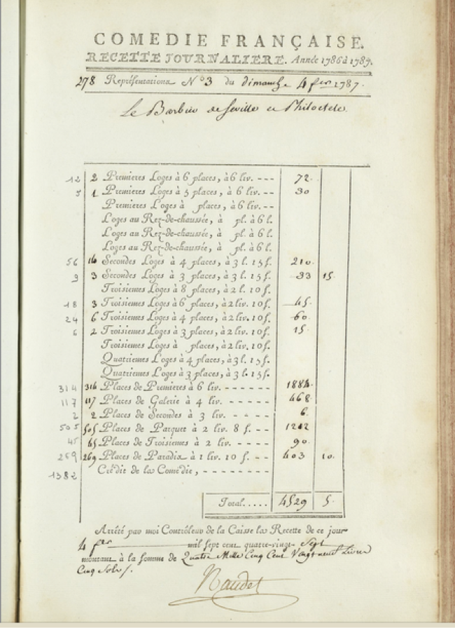

Ainsi, la base de données a permis d’établir le succès en terme de recettes de la soirée du 15 octobre 1786 mais n’a pas permis d’établir à coup sûr si cette réussite est a attribuée à l’une d’elle en particulier. Au contraire, l’examen des données suggère qu’il faut l’attribuer à la conjonction de deux pièces associées de façon préférentielle.
Toutefois, le parcours systématique des registres de la saison 1786-1787 tel que le permet l’outil informatique a fait surgir une nouvelle piste de recherche inattendue. Par deux fois, les registres signés par les semainiers Vanhove et Bellemont (il semblerait toutefois qu’une autre main, anonyme, remplisse les registres et que les semainiers se contentent de signer) indiquent , si l’on suppose que l’ordre des pièces comme il est relevé par ces registres est fidèle à la réalité, que le Philoctète était joué comme lever de rideau puis le Barbier de Séville en seconde partie après l’entracte. C’est là l’ordre établi depuis 1712 : le règlement voulait que la grande pièce (la pièce avec le plus de gravité et de concentration dramatique) précède la petite pièce, plus légère.
